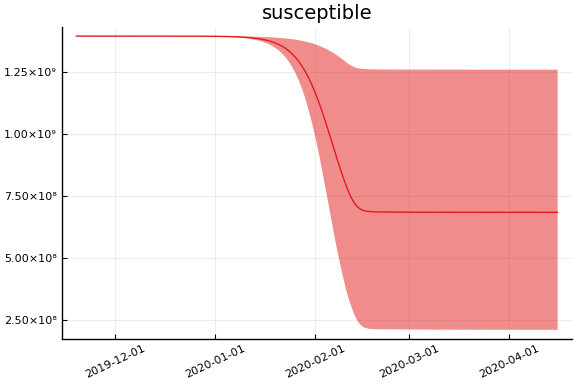
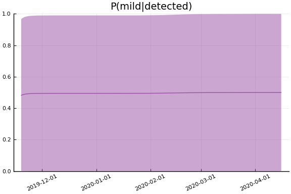
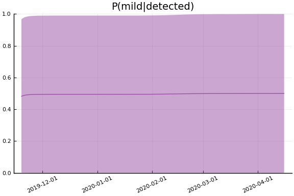

This work is licensed under a Creative Commons Attribution-ShareAlike 4.0 International License
using CovidSEIR, Plots, DataFrames, JLD2, StatsPlots
Plots.pyplot()
jmddir = normpath(joinpath(dirname(Base.find_package("CovidSEIR")),"..","docs","jmd"))
covdf = covidjhudata()
describe(covdf)
11×8 DataFrame. Omitted printing of 2 columns
│ Row │ variable │ mean │ min │ median │ max │ nuni
que │
│ │ Symbol │ Union… │ Any │ Union… │ Any │ Unio
n… │
├─────┼───────────┼───────────┼─────────────┼───────────┼────────────┼─────
────┤
│ 1 │ Date │ │ 2020-01-22 │ │ 2020-03-30 │ 69
│
│ 2 │ confirmed │ 556.139 │ 0 │ 0.0 │ 161807 │
│
│ 3 │ Province │ │ Alberta │ │ Zhejiang │ 79
│
│ 4 │ Country │ │ Afghanistan │ │ Zimbabwe │ 178
│
│ 5 │ Lat │ 21.8808 │ -41.4545 │ 23.7649 │ 71.7069 │
│
│ 6 │ Long │ 23.273 │ -135.0 │ 20.9727 │ 178.065 │
│
│ 7 │ deaths │ 22.3605 │ 0 │ 0.0 │ 11591 │
│
│ 8 │ recovered │ 175.706 │ 0 │ 0.0 │ 62889 │
│
│ 9 │ iso2c │ │ AD │ │ ZW │ 172
│
│ 10 │ cpop │ 2.2813e8 │ 33785.0 │ 2.49924e7 │ 1.39273e9 │
│
│ 11 │ ppop │ 2.74801e7 │ 41078 │ 1.557e7 │ 111690000 │
│
China¶
using Dates
dayt0 = Dates.Date("2020-01-22") - Dates.Day(30)
china = CountryData(covdf, "China", 30)
CountryData{Float64,Int64}(1.39273e9, [30, 31, 32, 33, 34, 35, 36, 37, 38,
39 … 89, 90, 91, 92, 93, 94, 95, 96, 97, 98], [17.0, 18.0, 26.0, 42.0, 56
.0, 82.0, 131.0, 133.0, 171.0, 213.0 … 3259.0, 3274.0, 3274.0, 3281.0, 32
85.0, 3291.0, 3296.0, 3299.0, 3304.0, 3308.0], [28.0, 30.0, 36.0, 39.0, 49.
0, 58.0, 101.0, 120.0, 135.0, 214.0 … 71857.0, 72362.0, 72814.0, 73280.0,
73773.0, 74181.0, 74720.0, 75100.0, 75582.0, 75923.0], [503.0, 595.0, 858.
0, 1325.0, 1970.0, 2737.0, 5277.0, 5834.0, 7835.0, 9375.0 … 6189.0, 5799.
0, 5410.0, 5030.0, 4603.0, 4310.0, 3881.0, 3600.0, 3236.0, 2967.0])
using Turing
mdl = countrymodel(china)
cc = Turing.psample(mdl, NUTS(0.65), 10000, 4)
import JLD2
JLD2.@save "$jmddir/china_$(Dates.today()).jld2" cc
JLD2.@load "$jmddir/china_2020-03-30.jld2" cc;
Estimates¶
plot(cc)

describe(cc)
2-element Array{ChainDataFrame,1}
Summary Statistics
parameters mean std naive_se mcse ess r_hat
────────── ────────── ───────── ──────── ─────── ───────── ──────
a 0.1116 0.0159 0.0001 0.0004 676.9759 1.0043
pE0 0.0046 0.0112 0.0001 0.0001 8053.5121 1.0002
p[1] 0.0009 0.0095 0.0000 0.0004 191.8930 1.0284
p[2] 0.2497 0.0816 0.0004 0.0022 395.7077 1.0201
sigC 12804.4406 1201.1866 6.3308 12.5916 8833.0310 1.0013
sigD 158.8962 15.4258 0.0813 0.2543 1203.2501 1.0093
sigRc 6068.5479 901.6056 4.7519 33.2961 164.4248 1.0349
β[1] 0.0009 0.0016 0.0000 0.0000 326.5190 1.0185
β[2] 0.7364 0.6101 0.0032 0.0072 2664.7742 1.0070
γ[1] 0.0483 0.0113 0.0001 0.0004 241.4455 1.0245
γ[2] 0.0448 0.0375 0.0002 0.0010 525.8293 1.0228
τ 0.0039 0.0057 0.0000 0.0001 1587.6686 1.0098
Quantiles
parameters 2.5% 25.0% 50.0% 75.0% 97.5%
────────── ────────── ────────── ────────── ────────── ──────────
a 0.0857 0.1003 0.1101 0.1208 0.1472
pE0 0.0003 0.0007 0.0015 0.0037 0.0314
p[1] 0.0000 0.0000 0.0001 0.0002 0.0007
p[2] 0.1222 0.2008 0.2404 0.2878 0.4421
sigC 10652.8196 11969.0427 12734.4509 13539.4288 15393.5293
sigD 132.2765 148.1737 157.4544 168.0933 192.5570
sigRc 4864.8856 5536.1782 5961.5187 6437.3924 7743.8764
β[1] 0.0000 0.0002 0.0005 0.0011 0.0032
β[2] 0.0149 0.2500 0.5861 1.0813 2.2423
γ[1] 0.0429 0.0458 0.0474 0.0491 0.0529
γ[2] 0.0014 0.0163 0.0360 0.0630 0.1395
τ 0.0001 0.0009 0.0023 0.0050 0.0152
Fit¶
sdf = simtrajectories(cc, china, 1:150)
f = plotvars(sdf, china, dayt0=dayt0)
plot(f.fit, xlim=nothing, ylim=nothing)

Implications¶
for fig in f.trajectories
display(plot(fig, xlim=nothing))
end
 


 
